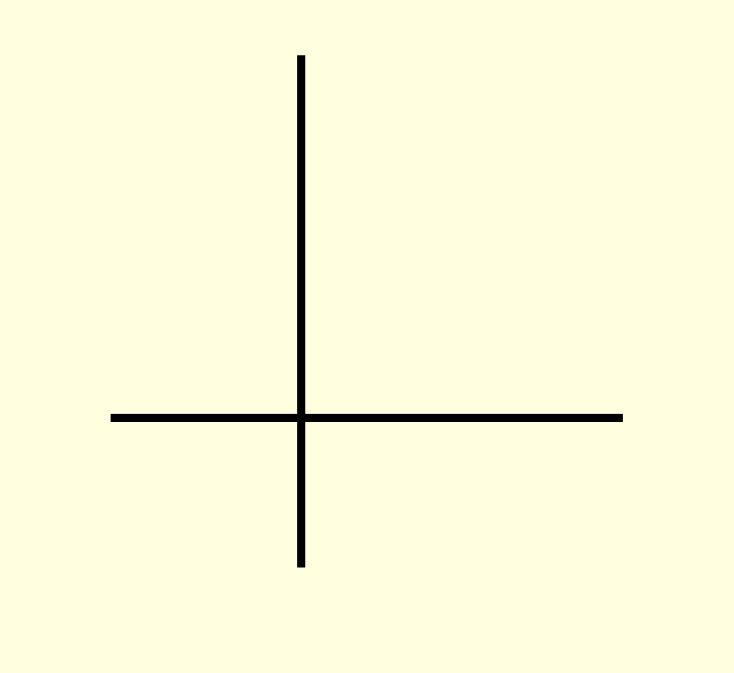

Step 1 Click here, if 0 ∈ B
Step 2 Click here, if number of elements in B is not 2
Step 3 Click here, otherwise
Example
B = {( 𝑢 -2-1 01 2 , 𝑣 -2-1 01 2 ), ( 𝑤 -2-1 01 2 , 𝑥 -2-1 01 2 )}
NOTE: Try it yourself for the vector space Rn over R for some other values of n
« Previous